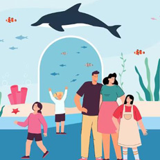
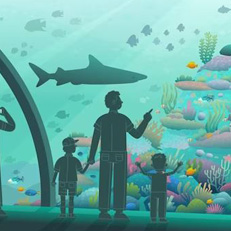
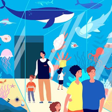
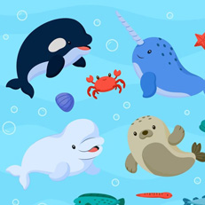

home>단체안내>단체 프로그램
단체 프로그램
국내 최다, 최장, 최고, 롯데월드 아쿠아리움
- 
- 650여 종 55,000여 마리
국내 최다 해양생물 - 한강 '민물고기'부터,
북극 흰고래 '벨루가'까지!
수많은 바다 친구들이 함께 살아가요.
- 650여 종 55,000여 마리
- 
- 국내 최장 관람창
- 국내에서 가장 큰 메인수조
관람창을 통해,다양한 바다 친구들을
가까이 관찰해 보세요.
- 
- 85m 국내 최장
수중터널 - 머리 위에 펼쳐진 거대한 바다!
우리나라에서 가장 긴 수중터널을 따라
바다의 신비를 경험해 보세요.
- 85m 국내 최장
- 
- 국내 최고
교육프로그램 - 국내 최고 최다 프로그램을 통해,
바다 친구들과 직접 교감하며
공부해 보세요.
- 국내 최고
단체 투어 안내
- 단체는 15명 이상부터 적용됩니다.
- 행사와 관련한 사전답사는 단체 담당자에게 연락하시면 됩니다.(답사일 기준 최소 3일전)
- 단체프로그램 예약문의 : 02-411-4903
단체 투어 혜택
- 실내시설로서 날씨와 상관없이 프로그램 진행이 가능할 뿐 아니라 교통이 편리합니다.
- 롯데월드 아쿠아리움에서는 해양 생물과의 교감을 통한 다양한 체험이 가능합니다.
아쿠아리움 현장학습
- 대상 : 유아, 초, 중, 고 현장학습
- 요금 : 별도 문의
- 가오리를 비롯한 다양한 해양생물을 보며 생태계 보존의 중요성을 인식하며, 자연과 교감을 통해 정서적 안정을 찾을 수 있는 아쿠아리움 기본 단체상품입니다.
[유아, 초등] 아쿠아리움 투어
- 대상 : 유아, 초등학생
- 참가인원 : 팀당 15명~30명(최대 3팀)
- 장소 : 아쿠아리움 전시관 내
- 시간 : 월~금요일(선착순 접수, 별도 전화문의)
- 구성 : 해설(40분)
- 내용 : 아쿠아가이드와 함께 해양 생물들에 대하여 보고 배우는 시간!!
- 롯데월드 아쿠아리움에서 살아가는 해양 생물들과의 특별한 만남을 가져보세요. (입장 + 전시해설 + 투어교재)
[중, 고등] 아쿠아리움 투어
- 대상 : 중, 고등학생
- 참가인원 : 팀당 15명~30명(최대 3팀)
- 장소 : 아쿠아리움 전시관 내
- 시간 : 월~금요일(선착순 접수, 별도 전화문의)
- 구성 : 해설(40분)
- 내용 : 아쿠아가이드와 함께 해양 생물들에 대하여 보고 배우는 시간!!
- 롯데월드 아쿠아리움에서 살아가는 해양 생물들과의 특별한 만남을 가져보세요. (입장 + 전시해설)
[초, 중, 고등] Dream Up
- 대상 : 초, 중, 고등학생
- 참가인원 : 15명~60명/회
- 장소 : 아쿠아리움 전시관 내
- 시간 : 월~금요일(선착순 접수, 별도 전화문의)
- 구성 : 직업소개(25분) + 후방투어(25분)
- 내용 : 아쿠아리움에서 생긴 일!!
- 24시간 생물과 함께하는 아쿠아리스트뿐 아니라 아쿠아리움의 보이지 않는 곳곳에서 바쁘게 움직이고 있는
- 아쿠아리움 사람들의 일과를 알아보실 수 있습니다. (입장 + 강의 + 후방투어 + 진로교재 + 기념볼펜)